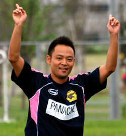

|
Fukuda Denshi, Sunday 26th September
After 2 successive defeats in the opening 2 games the Panthers needed a result against a Sala team who had also made a slow start to the season with 1 point from 2 games. A few surprises pre kick-off, losing 2 players through injury including our big centre half, forced a re-shuffle that saw Peter Swinney move into centre half against his former club. The biggest surprise came from the Panthers' Brazilian midfielder Frank who rocked up in a rapid Audi sports car (we still don't know exactly who it belongs to) but no models accompanied him this time unfortunately. After spreading out 8 people between 3 cars from Shibuya we were on our way to Chiba hoping not to run into the JEF Utd traffic.
We watched the Pumas complete their first victory of the season and after convincing big Richard Duffy to play back to back for us we had 12 players and were ready. For the first time this season we got a decent warm-up and were going into the game a little more adventurous with the old school 4-4-2 system.
The game began with a good tempo, both sides enjoying decent possession in the first 10-15 minutes. Sala were organised as expected and had good movement from their front 2. As the half went on the Panthers began to impose themselves in midfield winning more of the possession and the movement and pace of the Panthers frontline was always a threat. Both Edwin and Sho must be 2 of the quickest front pair in the league and were able to get behind the Sala defence and also link well with Ma and Frank out wide. The movement and flair of the front 4 seemed to be the best way forward with Kei and Ben solid in the centre of midfield challenging and spreading the play nicely.
The first goal was typical of the Panthers attacking play with a direct ball into the channel from Matt Lennon at left back. Edwin held it up and played square to the advancing Ma from the left wing. The top scorer from Div 2 last season showed his quality by rifling a shot left footed from the edge of the box. It took everyone by surprise including Taylor in the Sala goal who was unable to keep it out as it flew into the net. 1-0 and Panthers were leading for the first time this season.
The back 4 of the Panthers were rarely troubled for the remainder of the half with the exception of a cracking drive by Shige from the right which missed the top corner only by a metre or so. Other than that it seemed that set pieces were the only form of attack for Sala. The back four of the Panthers played well and protected the keeper from having to make any kind of save as far as I can remember.
Only other point to note was a knee injury late in the half to Ben Cordier who was playing well in midfield. On came Duffy who had 80 minutes under his belt already. Just before half time there was some controversy as a Sala player claimed an elbow in a challenge with Kei. In the heat of the moment there was some verbal confrontation and the half came to an end.
Panthers went into the second half determined to battle and expected a strong response from Sala. They did not disappoint and started throwing more players forward forcing several corners and free-kicks. With the Panthers back four taking a high defensive line Sala had a goal disallowed with the linesman Sid adamant that 2 white shirts had strayed offside. It was a sign of things to come.
Panthers continued to try and play and get forward even though they were clearly getting a little nervous. The second goal came from excellent work from Frank on the right who teased and turned on the right edge of the Sala penalty box before playing a square ball with the outside of his right foot to the advancing Romen who had a rare chance to play a more advanced centre midfield role now that Cordier was injured. Frank megged him although the gaffer would say he dummied it, and the ball ran to Ma who took a few touches on the edge of the box before driving a shot into the top left corner. 2-0 and surely that was it.
To their credit Sala did not give up and kept coming at the Panthers with Brooky especially influential and getting a lot of the ball. It was him who played a great through ball on the right edge of the Panthers penalty area, the Sala left and the resulting cross was headed goal wards. The ball took an agonizing deflection off Matt Lennon and into the goal. 2-1 and game on. 10 minutes later another needless free-kick conceded by the Panthers and the result was a carbon copy of the disallowed goal earlier, Toby heading into the far corner. 2-2 and Sala fancied their chances.
Not to be deterred by conceding another soft goal the Panthers only had one option, to go for the win. Frank smashed a Brazilian free kick off the bar from 35 yards out, but unfortunately the linesman was Scottish and not Russian and Taylor saved well denying Sho on the rebound. Then came the moment of the match and it came from an unlikely source. Neat interplay through middle between Kei and Ma fed Romen who was bombing down the right channel. Calls for him to keep a calm head and play the simple through ball were blatantly ignored as he swung a right foot at the ball from 30 yards out. It was one of those time stands still moments as the ball rose, soared, swerved and then dropped over the reclining Taylor. Great goal and rightly given despite claims for offside from Sala. 3-2 up and the Panthers weren’t going to let the 3 points slip now as closed out the match quite comfortably.
Great performance all round. The centre half pair of Swinney and Greene did a great job as did the middle midfield 3 - Ben, Romen, and especially Kei who was solid throughout. The front 2 looked like they were on sprint training duty and were a handful. A lot to still work on if Panthers are to be able to win consistently, chances need to be taken and defending as a team from set pieces is a must improvement. On the map though and hopefully onwards and upwards..
Report by Romen Barua
|